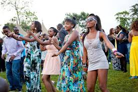

ENTERTAINMENT
AFRICA NOUVEAU 2018
A 2 day/2 night music and arts festival congregating creators,curators and fans from all over Africa and its diaspora.

It is purposefully designed by creators of nu Africa culture for the culture and their fans
DATE:2nd Feb 2108
VENUE:Small World Athi River
BLANKETS and WINE NAIROBI
DATE:April 10 2018
VENUE:Uhuru Gardens
TIME:12-10pm
TICKETS:KES 3000
Door tickets:-KES 3500


TICKET HERE
PERFORMANCES BY:Shekhinah-South Africa,
Maia and the Big sky-Kenya
Niniola-Nigeria,Berracah-Kenya
and Odinareh Bingwa-Kenya
THE KOROGA FESTIVAL 19TH EDITION
The KOROGA FESTIVAL brought to you by Capital Fm celebrates the greatest African arts from around the continent,food and culture


Show runs from Saturday 2pm to 11pm and Sunday from noon to 7 pm.There will be exclusive performances from DJ Joe Mfalme,Dj EXCLUSIVE,DJ Slick and many more
Artists:FALLY IPUPA,Dan Aceda,Kansoul and Linda
VENUE:Carnivore Gardens
DATE:1st February 2018
TICKETS:2500
GET TICKET
THE NYAMA CHOMA FESTIVAL
The 1st Nakuru edition is ON!!
For the first time ever Nyoma Festival brings the eating to the dusty land of Nakuru.There will lots of fun activities for the family and as usual lots of meat!!


VENUE:RIFT VALLEY SPORTS CLUB
DATE:February 2018 11am-10:00pm
TICKETS:Adults-4500,Kids-2000
GET TICKET
SAFARICOM JAZZ FESTIVAL 2018
This year marks the 6th aniversary of the Safaricom Jazz Lounge and what better way to celebrate this than a concert to commemorate our love for JAZZ.Featuring renowned perfomers such as Alune Wade(Senegal),The Limericks(Kenya),Kavita Shah(US).You can be sure you'll have an amazing experience
Music lovers can expect to enjoy a selection of pure jazz as well as a mix of jazz fusions with influences from around the world

DATE:March 4th 2018
VENUE:Uhuru Gardens
CHARGES:Adults-2000 Students:500
TIME:Starts at 8pm
GET TICKET